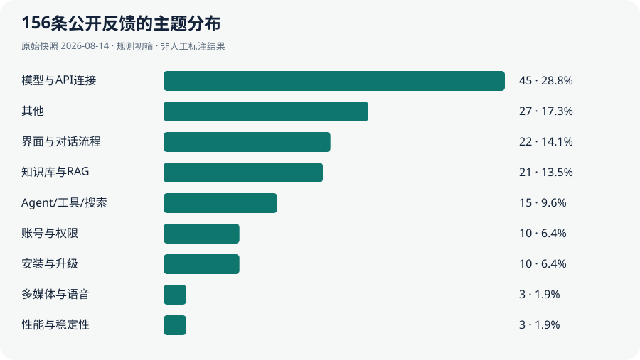

AI 产品经理与用户反馈协作角色
需要从分散反馈中快速定位问题簇，并建立可回溯的人工复核队列。
模型/API连接45条、界面与对话流程22条、知识库/RAG 21条，合计88条，占本批反馈56.41%。分类沿用原始规则初筛；数据快照2026-08-14，流程版本2026-09-20（最近处理时间见统计文件），人工复核0条。

| 编号 | 问题摘要 | 原规则分类 | 初筛分 |
|---|---|---|---|
| #28563 | 较大PPTX主预览区域空白 | 其他 | 39 |
| #28561 | 系统界面缩放继承值显示异常 | 界面与对话流程 | 51 |
| #28559 | 关闭淡入后思考指示器不显示 | 其他 | 55 |
从数据口径、分类统计到建议与验证，展示完整分析过程。
需要从分散反馈中快速定位问题簇，并建立可回溯的人工复核队列。
Issue 结构不一、主题混杂；评论数能反映讨论，但不能直接说明业务影响。
完成数据范围、隐私策略、分类体系、Triage 规则、PRD、MVP 与产品假设。
156条台账可按主题、类型、状态和初筛档位筛选，导出当前范围CSV及分析复盘清单。
先建立可搜索、可回溯的反馈台账，再把问题簇转成待验证的产品假设。
156 条公开 Issue、9 类主题、3 类反馈类型，以及筛选、原页回溯和 CSV 导出。
当前筛选范围与导出保持一致；开放问题清单排除已关闭记录，支持问题跟进与周报整理。
基于标题与公开标签的规则分类
根据本批规则统计提出的建议，附验证指标。
样本中最大主题为模型与 API 连接。下一步应按 provider、错误码和配置阶段拆分，并验证“一键连接测试 + 可读错误建议”能否减少重复 Issue。
21条反馈被规则归入知识库/RAG主题，尚未确认共同根因。下一步按上传、解析、索引和召回细分，再验证进度展示与失败恢复是否对应主要问题。
| Issue / 日期 | 标题 | 主题与类型 | 互动 | Triage | 证据 |
|---|
分数只组合公开互动、状态、问题/建议类型与少量阻塞关键词。没有用户规模、商业影响、修复成本和战略目标，不能直接排研发资源。
为人工复核排序，不做自动决策
通过 GitHub 公共 API 分页读取，访问日期 2026-08-14。
仅保留 Issue；不收集用户名、正文、日志或评论内容。
以标题和公开标签判断主题/类型，计算可解释的 Triage Score。
每条记录可回到原页；无法可靠归类时保留“其他/待判定”。
GitHub Issue 提交者更偏技术用户，且会受到项目治理方式影响。
讨论热度只是信号，不等于受影响用户数、收入或留存。
规则可复核但覆盖有限；生产环境需要人工抽检与版本化评估。
项目只保留公开 Issue 标题、状态、时间、标签、评论数、reaction 与原页链接；主动删除用户名和正文。分类与 Triage 是可解释初筛，不代表真实业务优先级。
重点不是把所有反馈自动打分，而是让每一步都能回到原始证据。
删除用户名、正文、日志和评论内容，只保留完成主题聚类与源页回溯所需的公开字段。
标题规则无法覆盖完整语义；允许未知项比为了图表整齐而强行归类更可信。
互动、状态和阻塞关键词不能替代用户规模、商业影响、研发成本与战略优先级。
人工标注抽检：后续优先复核27条“其他”与9条“咨询/待判定”记录（两组可能重叠），记录分歧后修订分类规则，再评估双人一致性。